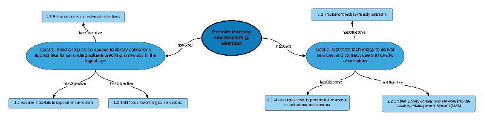
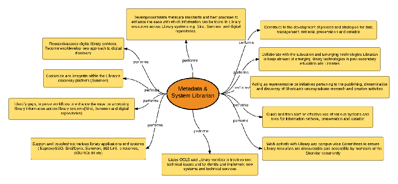
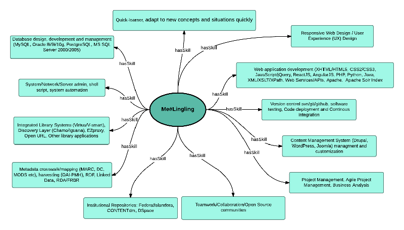
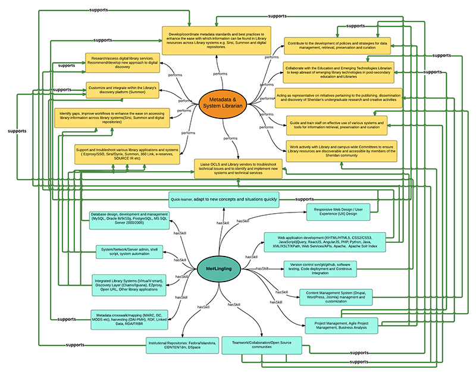

Striving for a premier learning environment at Sheridan
A work plan as a Metadata and Systems Librarian
Created by Lingling Jiang / @sprklinginfo
Who am I?
- Computer engineer: 13 years working in System Admin/Application Support/Web Application Development/Institutional Repository (IR) Development
- Information professional / MISt graduate: 6 years on library technologies
- Application Programmer: Digital Scholarship Unit (DSU) at University of Toronto Scarborough Library
- Coder, Open Source Contributor & Hacker
Framework
- Where are we now?
- Where are we going?
- How will we get there?
(Olsen, 2012)
Where are we going?
Strategic Goals & Responsibilities Analysis



Findings
- Goal 2.1 - Utilize digital tools to provide better access to collections and services
- Goal 2.3 - Implement mobile-friendly solutions
- Goal 1.3 - Enhance access to external collections
- Goal 2.2 - Embed Library content and services into the Learning Management System (LMS)
Where am I now?
Core competencies & Responsibilities Analysis


Findings
- All of core skills and knowledge can be applied to support one or more responsbilities of the position
- May need shift focus on mobile web & app development
Where are we Now?
SWOT analysis
Purpose: Identify Strengths, Weaknesses, Opportunities and Threats
Library Systems/Services Assessment
- Library systems (Website, ILS, Discovery, IR, other technologies)
- User Research to understand user behaviors, needs and motivations
- Service quality assessment
How will we get there?
Enhance Web Scale Discovery
- Harvest/add records from IR or local collections
- How relevant are search results?
- Include Open Access content to Summon?
- Automated Contextual Research Assistance
- Extend to have social networking tools (reviews, rating, and reading list?)
Metadata Quality Assessment & Control
References
Olsen, E. J. (2012). Strategic planning kit for dummies
Empty Slide
Code example slide
$doc = new DOMDocument('1.0', 'utf-8');
$doc->formatOutput = true;
$node = dom_import_simplexml($xml);
$node = $doc->importNode($node, true);